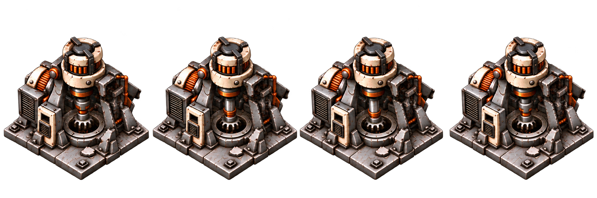
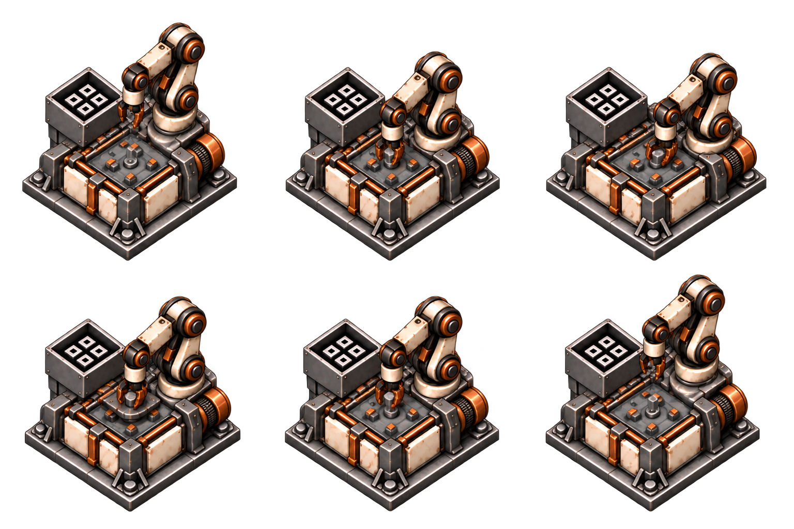
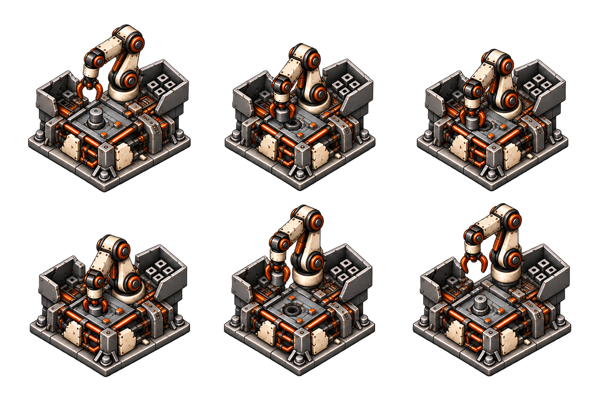
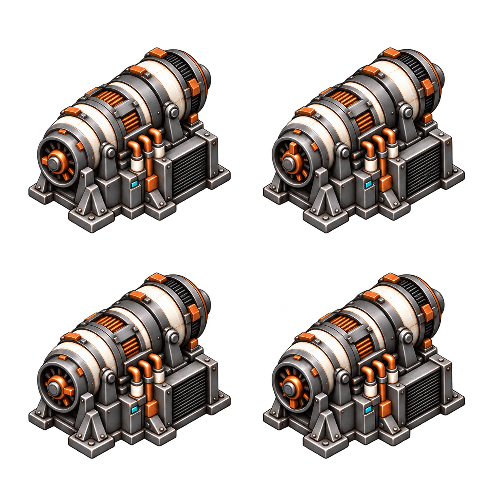
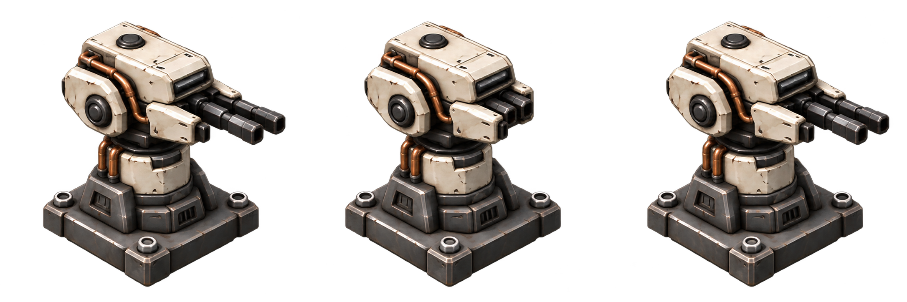
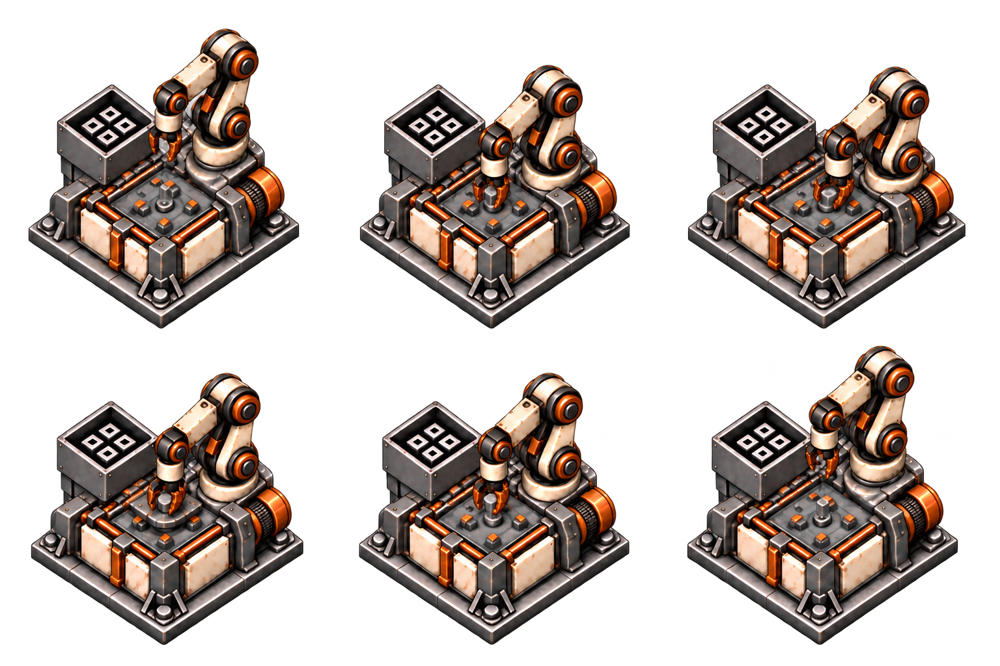
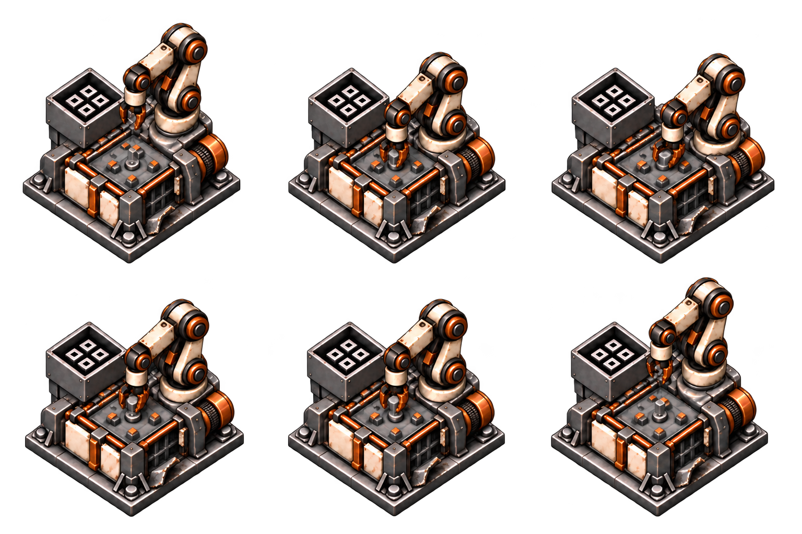

extractor-severe-r0-cycle-v3
runtime-prototype · alpha 56.0%
Consistent facing and visible broken right housing. Colored edge speckles remain. Drill motion subtle, loop and alignment need review.

Exact prompt and provenanceFive explicit rotation-0 clips are used in gameplay as prototypes. This gallery shows the original equal-grid layouts; gameplay uses the translated crops in runtime-clips.json. Originals preserved; final production polish remains open.
runtime-prototype · alpha 56.0%
Consistent facing and visible broken right housing. Colored edge speckles remain. Drill motion subtle, loop and alignment need review.

Exact prompt and provenanceruntime-prototype · alpha 56.9%
Pixel inspection confirms real transparent background; RGB backdrop shown by inline preview was misleading. Six poses preserve facing. Fixture/workpiece changes and base registration still need review.

Exact prompt and provenanceneeds-cross-condition-correction · alpha 57.9%
Real alpha confirmed. Six poses preserve facing and exposed chassis. Hopper arrangement differs from light pilot; cross-condition identity and frame anchors need correction.

Exact prompt and provenanceruntime-prototype · alpha 60.2%
Visible keyed rotor rotation with consistent facing. Cyan display remains baked in despite dark-lamp request; edge speckles and anchor alignment need correction/review.

Exact prompt and provenanceruntime-prototype · alpha 59.7%
Clear extend/recoil/return poses, dark display and consistent aim. Colored edge speckles remain. Base and barrel alignment and actual-shot binding unverified.

Exact prompt and provenanceneeds-registration-and-mechanism-review · alpha 57.1%
Pixel inspection confirms real transparent background; RGB backdrop shown by inline preview was misleading. Six poses preserve facing. Fixture/workpiece changes and base registration still need review.

Exact prompt and provenanceruntime-prototype · alpha 56.7%
Correction restores left hopper/right arm layout shared with light pilot. Missing right enclosure panel persists across six poses. Base/port landmarks and fixture changes still require registration and motion review.

Exact prompt and provenance